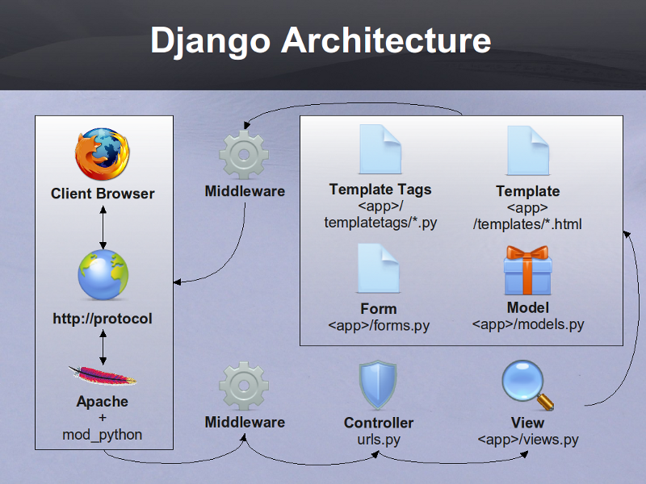
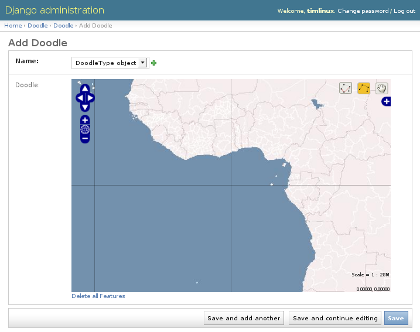
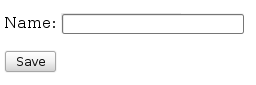
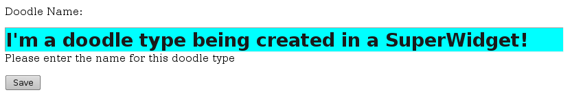
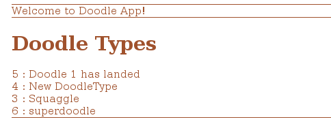
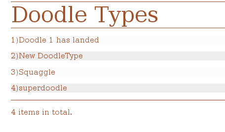

1. High Level Overview of Django

Django is an application framework based on the Model, View, Controller (MVC) concept.
As we can see in the above diagram, a typical application workflow is as follows:
- A user opens their browser and points it at a django url
- The url request is transported via the http:// protocol to a host
- The host runs a web server such as apache with the mod_python module installed receives the request and passes it into the django application
- Before django does anything with the request, it passes it through 0 or more middleware layers which if needed clean up or pre-parse the http request
- The middleware then forwards the request to the controller
- The controller looks at the url structure (e.g. http://somehost.com/doodle/makedoodle/) and determines which view is associated with the request
- The view (e.g. makedoodle) typically will create or instantiate a model (e.g. a doodle model)
- The view then typically will use a template to render the model as an html web page
- The template may include reusable snippets called templatetags for commonly repeated html phrases
- If the view requires user input, it can do this by creating a form instance and rendering the form into the template
- Forms are autogenerated using standard widgets (button, input, select etc) or you can create custom widgets
- Once the response is rendered by the view, it is passed on to the middleware layer
- The middleware can post-parse the response (e.g. to format it nicely) before sending it back to the web server
- The web server passes the response over the http:// protocol to the client browser
- The user sees a page appear in the browser
You will notice quite a few 'typically' and 'can' qualifiers in the above scenario. This is because, Django is extremely flexible and you can adapt this work flow according to your needs. This includes e.g. having a view return a response without using any models, any forms, any templates. Similarly templates need not use custom templatetags, forms need not use custom widgets etc.
Now that we have an overview in place, lets dive in and try Django out!
2. Django Installation
2.1. Creating the top level working dir
Django is available in apt, but this will be one of the few times I break my rule about preferring apt installed packages over hand installed.
Instead we will use something called a 'python virtual environment' - which is considered to be the best practice for deploying a django project.
We will begin by creating a top level working directory e.g.
mkdir -p /home/web/django cd /home/web/django
2.2. Understanding the directory structure
In our next step we will set up our virtual environment. We are aiming to end up with something like this :
django |-- project1 | |-- app1 | `-- app2 |-- project2 | |-- app1 | `-- app2 `-- python <-- virtual environment for python
Django divides your work into projects and applications. A ''project'' provides shared templates, media (images, logos etc) to its applications and a shared user database and so on.
An ''application'' provides some specific functionality. You can also install third party applications under your project directory to provide things like login frameworks etc.
We will get on to how projects and applications are created in a minute, but first lets get our python virtual environment set up...
2.3. Creating the virtual environment
To create your virtual environment, make sure you are in the django directory we created above first and then do:
sudo apt-get install python-setuptools build-essential python-dev libpq-dev sudo easy_install virtualenv virtualenv --no-site-packages python source python/bin/activate easy_install pip
What have we just done? We have set up a virtual environment (think of it as a simplified version of a virtual machine). In the virtual environment, we have a repeatable, easily backed up and independent set of python libraries used to drive the django web site we are going to create.
- Repeatable : you can easily deploy your application to another machine
- Easily backed up : you just backup the whole of your django dir and then you have a backup of not only your django project, but also the python libs needed to run it.
- Independent : If the system libraries change, it should not affect your web site.
2.4. Install Django into the Virtual Environment
Now we want to install django and a few other pre-requisites into the virtual environment.
pip install django pip install django-registration pip install django-debug-toolbar pip install django-extensions pip install psycopg2
You need to be connected to the internet for the above commands to work. The above commands install django, psycopg2 (which lets python connect to postgresql databases) and a few other useful django applications which we will use later in this tutuorial.
In case you are wondering, pip is a package management tool for python.
Following the above steps, your directory structure should now look like this:
django
`-- python
|-- bin
| |-- activate
| |-- activate_this.py
| |-- django-admin.py
| |-- easy_install
| |-- easy_install-2.6
| |-- pip
| `-- python
|-- include
| `-- python2.6 -> /usr/include/python2.6
`-- lib
`-- python2.6
2.5. Activate the virtual env
Whenever you start a shell session, you need to source the activate script to enabled the python virtual environment:
source python/bin/activate
This sets up the system search path for python to look into your virtual env. in preference over using the system libs under /usr/lib/python.
2.6. Setup Postgresql
You don't need to use postgresql with django - it supports a variety of other databases. But its a good choice for a backend especially in light of the support for spatial datasets via PostGIS, so lets install and use it:
sudo apt-get install postgresql-8.4-postgis
3. Initial project setup
A project can contain one or more applications. We will use the postgis backend here though various other backends are supported and more are on the way. Lets create our first project:
cd /home/web/django source python/bin/activate django-admin.py startproject django_project cd django_project/ createdb django_project createlang plpgsql django_project psql django_project < /usr/share/postgresql-8.3-postgis/lwpostgis.sql psql django_project < /usr/share/postgresql-8.3-postgis/spatial_ref_sys.sql
''Note:'' If you are using postgresql 8.4 those last two lines should look like this rather:
psql django_project </usr/share/postgresql/8.4/contrib/postgis-1.5/postgis.sql psql django_project </usr/share/postgresql/8.4/contrib/postgis-1.5/spatial_ref_sys.sql
3.1. Setup your Database connection
At this point you should fill in the database connection settings (in settings.py):
# Note delete django.db.backends. DATABASE_ENGINE = 'postgresql_psycopg2' # 'postgresql_psycopg2', 'postgresql', 'mysql', 'sqlite3' or 'oracle'. DATABASE_NAME = 'django_project' # Or path to database file if using sqlite3. DATABASE_USER = 'foouser' # Not used with sqlite3. DATABASE_PASSWORD = 'foopassword' # Not used with sqlite3. DATABASE_HOST = 'localhost' # Set to empty string for localhost. Not used with sqlite3. DATABASE_PORT = '5432' # Set to empty string for default. Not used with sqlite3.
Also set the time zone:
TIME_ZONE = 'Africa/Johannesburg'
Then save and close the settings.py file and do:
python manage.py runserver
You should now be able to visit your project here:
http://localhost:8000
Note you can use any port you like.
Your browser should show a message something like this:
It worked! Congratulations on your first Django-powered page. Of course, you haven't actually done any work yet. Here's what to do next: * If you plan to use a database, edit the DATABASE_* settings in django_project/settings.py. * Start your first app by running python django_project/manage.py startapp [appname]. You're seeing this message because you have DEBUG = True in your Django settings file and you haven't configured any URLs. Get to work!
Lets take another look at our directory structure now:
django
|-- django_project
| |-- __init__.py
| |-- manage.py
| |-- settings.py
| `-- urls.py
`-- python
|-- bin
|-- include
`-- lib
As you can see from the above diagram, django has created a basic project framework for us under the directory entitled 'django_project'.
4. Make an application
As we said above, a project contains one or more applications. All apps in the project use a global settings and urls file (which we will look at in more detail just now). First we will create a simple application.
First kill the server by pressing ctrl-c and then do:
cd /home/web/django/django_project/ python manage.py startapp doodle
Doing that creates a new directory under our project called doodle:
django
|-- django_project
| |-- doodle
| | |-- __init__.py
| | |-- models.py
| | |-- tests.py
| | `-- views.py
| |-- __init__.py
| |-- __init__.pyc
| |-- manage.py
| |-- settings.py
| |-- settings.pyc
| `-- urls.py
`-- python
|-- bin
| |-- activate
|-- include
`-- lib
You can see the creation of our doodle app introduced some new files into our directory tree:
- models.py - where we define our models
- views.py - where we define our views
Where is the controller? urls.py in the top level project dir is our controller
- it decodes urls and sends requests on to the correct view class.
Now we have an application - we can visit it like this:
Make sure the test server is running first:
''Note:'' The source and cd commands above are only needed if you have started a new shell session and or changed to a different directory in the meantime.
cd /home/web/django/django_project/ source ../python/bin/activate python manage.py runserver
Now point your browser at the app:
http://localhost:8000/doodle/
You should see a basic placeholder message.
4.1. Create a model
Now the fun starts. Django has a fun, intuitive and powerful way to define models. Each model is a python class. Edit doodle/models.py and add:
# our base class
from django.db import models
# import GeoDjango stuff to support spatial data types
from django.contrib.gis.db import models
# use python time goodies
import datetime
class Doodle(models.Model):
name = models.CharField(max_length=255)
doodle = models.LineStringField(srid=4326,null=True, blank=True)
doodle_date = models.DateTimeField('DateAdded',
auto_now=True, auto_now_add=False)
objects = models.GeoManager()
class Meta:
db_table = 'doodle'
verbose_name = ('Doodle')
verbose_name_plural = ('Doodles')
ordering = ('doodle_date',)
Next we must be sure our application is registered in the project settings.py:
INSTALLED_APPS = ( 'django.contrib.auth', 'django.contrib.contenttypes', 'django.contrib.sessions', 'django.contrib.sites', #register our simple app... 'django.contrib.gis', 'doodle', )
Nifty - now lets deploy our new model!
python manage.py syncdb
You will see output something like this:
Creating table auth_permission Creating table auth_group Creating table auth_user Creating table auth_message Creating table django_content_type Creating table django_session Creating table django_site Creating table doodle Installing custom SQL for doodle.Doodle model You just installed Django's auth system, which means you don't have any superusers defined. Would you like to create one now? (yes/no): yes Username (Leave blank to use 'timlinux'): E-mail address: tim@linfiniti.com Password: Password (again): Superuser created successfully. Installing index for auth.Permission model Installing index for auth.Message model
What just happened? Django just created the backend tables for the Object Relational Mapping (ORM) between our model and the backend:
[django_project] psql django_project Welcome to psql 8.3.5, the PostgreSQL interactive terminal. \copyright for distribution terms \h for help with SQL commands \? for help with psql commands \g or terminate with semicolon to execute query \q to quit doodle=# \d List of relations Schema | Name | Type | Owner --------+-----------------------------------+----------+---------- public | auth_group | table | timlinux public | auth_group_id_seq | sequence | timlinux public | auth_group_permissions | table | timlinux public | auth_group_permissions_id_seq | sequence | timlinux public | auth_message | table | timlinux public | auth_message_id_seq | sequence | timlinux public | auth_permission | table | timlinux public | auth_permission_id_seq | sequence | timlinux public | auth_user | table | timlinux public | auth_user_groups | table | timlinux public | auth_user_groups_id_seq | sequence | timlinux public | auth_user_id_seq | sequence | timlinux public | auth_user_user_permissions | table | timlinux public | auth_user_user_permissions_id_seq | sequence | timlinux public | django_content_type | table | timlinux public | django_content_type_id_seq | sequence | timlinux public | django_session | table | timlinux public | django_site | table | timlinux public | django_site_id_seq | sequence | timlinux public | doodle | table | timlinux <-- w00t! public | geometry_columns | table | timlinux public | spatial_ref_sys | table | timlinux
Lets take a look at the table it created:
doodle=# \d doodle
Table "public.doodle"
Column | Type | Modifiers
-------------+--------------------------+-----------------------------------------------------
id | integer | not null default nextval('doodle_id_seq'::regclass)
name | character varying(255) | not null
doodle_date | timestamp with time zone | not null
doodle | geometry |
Indexes:
"doodle_pkey" PRIMARY KEY, btree (id)
"doodle_doodle_id" gist (doodle)
Check constraints:
"enforce_dims_doodle" CHECK (ndims(doodle) = 2)
"enforce_geotype_doodle" CHECK (geometrytype(doodle) = 'LINESTRING'::text OR doodle IS NULL)
"enforce_srid_doodle" CHECK (srid(doodle) = 4326)
4.2. Test drive the model
Django provides a python shell for interactive testing of models. This is the same as a normal python shell but it sets up all the environment variables / python path etc. needed to find your classes.
[django_project] python manage.py shell Python 2.5.2 (r252:60911, Oct 5 2008, 19:29:17) [GCC 4.3.2] on linux2 Type "help", "copyright", "credits" or "license" for more information. (InteractiveConsole) >>> from doodle.models import * >>> myDoodle = Doodle() >>> myDoodle.name = "foo" >>> print myDoodle.name >>> myDoodle.doodle = 'LINESTRING(0 0, 10 10)' >>> print myDoodle.doodle LINESTRING (0.0000000000000000 0.0000000000000000, 10.0000000000000000 10.0000000000000000) >>> myDoodle.save() >>> myDoodle2=Doodle.objects.get(id=1) >>> myDoodle2.name u'foo' >>> quit()
Here are the commands again without the shell output:
python manage.py shell from doodle.models import * myDoodle = Doodle() myDoodle.name = "foo" myDoodle.doodle = 'LINESTRING(0 0, 10 10)' myDoodle.save() myDoodle2=Doodle.objects.get(id=1) myDoodle2.name quit()
Lets see what the above code does in the backend:
psql django_project doodle=# select id,name,doodle_date,asText(doodle) as doodle from doodle; id | name | doodle_date | doodle ---+------+-------------------------------+----------------------- 1 | foo | 2009-02-08 00:29:47.961586+02 | LINESTRING(0 0,10 10) (1 row)
So in a few minutes we have created an object relational mapped code base that you can use from any python context (not just Django web apps).
4.3. Create a default admin view for the doodle model
Django has a powerful autogenerated admin interface that you can use to manage the data in your models. Lets add the admin view for our doodle model:
vim doodle/admin.py
Now add this:
from django.contrib.gis import admin
from models import *
class DoodleAdmin(admin.GeoModelAdmin):
field = (None, {'fields': ('name')})
field = (None, {'fields': ('doodle')})
field = (None, {'fields': ('doodle_date')})
list_display = ('name', 'doodle_date', 'doodle')
list_filter = ('name', 'doodle_date')
#Register each model with its associated admin class
admin.site.register(Doodle, DoodleAdmin)
Note that our model inherits from admin.GeoModelAdmin which will enable the admin environment to generate maps for the admin user interface.
Lastly, register the django admin app with the controller:
vim urls.py
And uncomment these lines near the top:
from django.contrib import admin admin.autodiscover()
....and uncomment the admin root...
# Uncomment the next line to enable the admin: (r'^admin/', include(admin.site.urls)),
Lastly edit settings adding admin and gis apps to the installed apps list:
INSTALLED_APPS = ( 'django.contrib.auth', 'django.contrib.contenttypes', 'django.contrib.sessions', 'django.contrib.sites', # Add the next line for admin 'django.contrib.admin', # And the next line for the django gis components 'django.contrib.gis', 'doodle', )
We need to tell django about our new admin model so we re-run syncdb:
python manage.py syncdb
It should report something like this:
Creating table django_admin_log Installing index for admin.LogEntry model
Now kill and restart the django server:
ctrl-c python manage.py runserver
If you point your browser to : http://localhost:8000/admin/ you should now get a log in prompt and after that see the doodle model listed.
You can play around adding and deleting doodles using the admin interface.
In practice we probably won't use the admin interface very much since we will spend most of the time on this course learning to build our own custom user interfaces. However it is good to remember the admin functionality exists because its really quick and easy to slap a simple web application together using only models and the web admin interface.
5. Models
In our quickstart run through in the previous section we created a simple model and saw how you can manipulate the model using the django python console. We also saw that you can create a user interface for the model quickly by using the admin application that comes as a standard part of django.
The heart of Django is the Object Relational Mapping (ORM) functionality it provides. With Django, you program and think in python and the application framework does all the nuts and bolts stuff behind the scenes or serialising your saved models into the database and deserialising the models again when you need to access them.
We saw a simple example of this, for example by doing:
myDoodle.save()
A record was created in the database representing the model. And when we did:
myDoodle2 = Doodle.objects.get(id=1)
The django framework took care of deserialising the model from the database and making it available to us as a python object.
Models are always defined in <yourapp>/models.py.
Defining a model is simply a matter of adding a new class to the above file.
The model creation consists of four steps:
- Create a new class that inherits from models.Model in <yourapp>/models.py. This class will be mapped to a table entity on the database backend.
- Add the property definitions to your class. These will be mapped to fields in the table on the database backend.
- Define the metadata inner class. This provides you a way to specify how the models should be shown to the users and created in the database. For example, you can use the metadata inner class to specify a non-default backend table name.
- Use the manage.py syncdb command to create the backend database model and perform an integrity check of the model.
Lets look again at the model definition we created earlier, but with some extra comments:
# Our base class
from django.db import models
# import GeoDjango stuff to support spatial data types
from django.contrib.gis.db import models
# Use python time goodies
import datetime
# A class defines our model if it inherits from models.model
class Doodle(models.Model):
# Create a name field
name = models.CharField(max_length=255)
# And a geometry field for our doodle
doodle = models.LineStringField(srid=4326,null=True, blank=True)
# Lastly make an auto populated date field
doodle_date = models.DateTimeField('DateAdded',
auto_now=True, auto_now_add=False)
# Model manager that must be added to any model with a geometry
objects = models.GeoManager()
# Metadata inner class
class Meta:
# Name the table should be given on the database backend (optional)
db_table = 'doodle'
# Name to be used in the user interface (generated web pages) for this model
verbose_name = ('Fantastic Doodle')
# Plural name to be used in the user interface
verbose_name_plural = ('Fantastic Doodles')
# Column ordering to be used by default if a collection of model instances is
# obtained.
ordering = ('doodle_date','name',)
5.1. Field Types
There are a number of different field types you can use, including special types that will build foriegn key constraints, multikey join tables, lookup lists and so on. Here is a complete list of allowed types:
Standard field types:
AutoField BooleanField CharField CommaSeparatedIntegerField DateField DateTimeField DecimalField EmailField FileField FilePathField FloatField ImageField IntegerField IPAddressField NullBooleanField PositiveIntegerField PositiveSmallIntegerField SlugField SmallIntegerField TextField TimeField URLField XMLField
Relationship fields:
ForeignKey ManyToManyField OneToOneField
Spatial field types:
PointField LineStringField PolygonField MultiPointField MultiLineStringField MultiPolygonField GeometryCollectionField
5.2. Verbose Names
You can use verbose_name to give the model field a more friendly name that will be shown on forms etc. Note: for foreign key and other relationship fields, you must place the verbose name after the relation name. e.g.
status = models.ForeignKey(Status,verbose_name="Order Status")
5.3. Choices
If you want to restrict the values that a user can choose from in order to populate the field. You can do this using a list e.g.:
myChoices = (("a" , "Pothole"), ("b" , "Road Sign"), ("c" , "Vagrants"))
Then when you create your field you would do:
name = models.CharField(max_length=255,choices=myChoices)
If you open the doodle model in the admin web interface, you should see that the text field for name is now replaced with a combo with the items listed in myChoices in it.
Personally I think using the choices option is usually better implemented using a separate model and then using a relationship field. If you are really sure the choices list will never change, you could use it. Let me show you how we would rather implement the choice using a second model and a relationship field.
5.4. Relationship fields
First delete the myChoices... line we created above. Next add a new class to models.py (put it before the doodle class) that looks like this:
class DoodleType(models.Model):
name = models.CharField(max_length=255)
objects = models.Manager()
def __unicode__(self):
return self.name
class Meta:
db_table = 'doodletype'
verbose_name = ('Doodle Type')
verbose_name_plural = ('Doodle Types')
ordering = ('name',)
Next, change the doodle.name field from a charfield to one that looks like this:
name = models.CharField(max_length=255)
And add doodle.type like this:
type = models.ForeignKey(DoodleType)
''Note:'' if you want to, you can specify a default value across the ForeignKey relate by doing e.g.
doodle_type = models.ForeignKey(DoodleType, default=DoodleType.objects.get(id=1))
(which uses the first instance of doodle type as the default value).
To register the changes in our models, you need to run syncdb again. However we have changed an existing model's field type (Doodle.name) which means that model's table definition also needs to be synced to the database. Before we can do that we need to drop its table. We will discuss later how to deal with data that may be in a table if you need to replace it with one that contains existing functionality:
echo "drop table doodle;" > psql django_project python manage.py syncdb
or
python manage.py sqlreset doodle | psql django_project
Finally to test, we need to add a new entry to doodle/admin.py...:
from django.contrib.gis import admin
from models import *
class DoodleTypeAdmin(admin.ModelAdmin):
list_display = ('name',)
class DoodleAdmin(admin.GeoModelAdmin):
field = (None, {'fields': ('name')})
field = (None, {'fields': ('doodle')})
field = (None, {'fields': ('doodle_date')})
list_display = ('name', 'doodle_date', 'doodle')
list_filter = ('name', 'doodle_date')
#Register each model with its associated admin class
admin.site.register(DoodleType, DoodleTypeAdmin)
admin.site.register(Doodle, DoodleAdmin)
Registering the DoodleType model in the admin interface is much simpler since it does not contain any geometry fields. Django only needs the line
admin.site.register(DoodleType, DoodleTypeAdmin)
added to admin.py and it will do all the rest. If you go back to your doodle admin interface now it should look something like this:

You will notice there is now a little + icon next to the Name field. If you click on it, the admin interface will pop up a form where you can manage the list of names in the DoodleType model.
5.5. One last thing
If you were alert, you might have wondered what is to prevent the same DoodleType name being added twice. In fact django automatically added a unique constraint to that field:
django_project=# \d doodletype
Table "public.doodletype"
Column | Type | Modifiers
--------+------------------------+---------------------------------------------------------
id | integer | not null default nextval('doodletype_id_seq'::regclass)
name | character varying(255) | not null
Indexes:
"doodletype_pkey" PRIMARY KEY, btree (id)
"doodletype_name_key" UNIQUE, btree (name)
So you will see in the next snippet what would happen if you try to insert a duplicate record:
django_project=# select * from doodletype;
id | name
----+------
1 | Test
(1 row)
django_project=# insert into doodletype (name) values ('Test');
ERROR: duplicate key value violates unique constraint "doodletype_name_key"
Once again django just takes care of stuff for you in the background and you don't need to worry about too many small details...
6. Views
Ok by now you should understand the basic concept of a model - you define it using a python class, synchronise the database to your model definitions, and then you can add the model to the admin user interface if you want to get a quick & dirty UI for your models.
Invariably however, you will want to create your own views and forms. In other words, you will want your site to have its own unique look and feel and user interactions, rather than the canned environment of the admin interface.
To do that will start by delving into views a little.
6.1. Hello World
I bet you have been waiting for this moment :-) While a model represents an object or entity, a view represents a particular 'view' of an object or group of objects. We can also have a view that does not reflect the state of any particular object, but rather just some hard coded information - which is what we will look at first...
Open up your doodle/views.py file. It should contain something like this:
# Create your views here.
Looks like someone was here before us then eh? The views stub was created when we created our application. Views in django are simply function definitions so we can create one like this:
from django.http import HttpResponse
def helloWorld(theRequest):
return HttpResponse("<h1>Hello World</h1>")
Thats about the simplest view you can make. The HttpResponse class knows how to return any string you give it as a web page back to the clients browser.
You will notice that the helloWorld view takes a single parameter 'theRequest' which is an object containing all of the request context information from the client. For example it has any form post variables, the user agent (which browser is being used) etc. Since this is a really simple view the request parameter is actually ignored, but we will see later how to make good use of it.
So how does the client (i.e. you operating your web browser) get to see the view? You need to add a rule to our controller. This is done in the urls.py file:
from django.conf.urls.defaults import *
# So we can find our hello world views
from doodle.views import *
# Uncomment the next two lines to enable the admin:
from django.contrib import admin
admin.autodiscover()
urlpatterns = patterns('',
# Example:
# (r'^django_project/', include('django_project.foo.urls')),
# Uncomment the admin/doc line below and add 'django.contrib.admindocs'
# to INSTALLED_APPS to enable admin documentation:
# (r'^admin/doc/', include('django.contrib.admindocs.urls')),
# Uncomment the next line to enable the admin:
(r'^admin/', include(admin.site.urls)),
# For our hello world view
(r'^helloWorld/', helloWorld),
)
Earlier we used our urls.py file to configure support for the admin interface. Now I have added the following two lines to support our hello world view:
# So we can find our hello world views from doodle.views import *
...and...
# For our hellow world view
(r'^helloWorld/', helloWorld),
The first new line just lets the controller (urls.py) know where to find our views (doodle.views). The second addition adds a rule to urlpatterns. The rule is a regular expression saying 'if the url starts with helloWorld, render the helloWorld view'. Simple eh?
Try pointing your browser to your django instance now and see if you get a hello world message back:
http://localhost:8000/helloWorld/
should show:
Hello World
6.2. A view that takes a parameter
Django uses restful style urls to pass instructions and parameters to the controller. Say, for example, you want to get a personalised greeting when you connect to a view e.g.:
Hello Tim!
First we would defined a new view that takes a parameter (in doodle/views.py):
def helloPerson(theRequest,thePerson):
return HttpResponse("<h1>Hello " + str(thePerson) + "!</h1>")
So that will take an extra parameter and print it in the response. Of course we still need to add a rule to our controller...(in urls.py):
# For our hello person view (r'^helloPerson/(?P<thePerson>[a-zA-Z]+)/$', helloPerson),
Ok that looks a bit greek like? Lets break it down:
r <-- what follows in quotes is a regular expression
^ <-- carat means 'start of the line'
note the http://localhost:8000/
part of the url is ignored in url matching
helloPerson/ <-- the literal string is matched here
(?P<thePerson>[a-zA-Z]+) <-- match any number of upper case or lower case
letters to the view parameter 'thePerson'
/$ <-- end of the line
So in plain english it means 'if the url starts with /helloPerson/ followed by any sequence of upper or lower case characters, assign that character sequence to a variable called "thePerson" and pass it on to the helloPerson view.
Make sense? It will make more sense as you get a bit more experience with django. Lets test out our new view:
http://localhost:8000/helloPerson/Tim/
...should show this...
Hello Tim!
6.3. A view that works with models
Ok thats very nifty but in the real world, nine times out of ten you want your view to interact with model data. First add a few more entries to your DoodleType table using the admin web interface. Now lets make a view that shows a list of DoodleTypes (in doodle/views.py):
from doodle.models import *
def listDoodleTypes(theRequest):
myObjects = DoodleType.objects.all()
# Optional - sort descending:
#myObjects = DoodleType.objects.all().order_by("-name")
myResult = "<h1>doodle types</h1>"
for myObject in myObjects:
myResult = myResult +str(myObject.id) + " : " + str(myObject.name) + "<br />"
return HttpResponse(myResult)
The view simply gets all the DoodleType objects (remember django's ORM seamlessly pulls these from the database backend for you) and the loops through them building up a string. The string is then returned to the browser using the HttpResponse call.
Before we can see the view, you need to add a new rule to the controller. Sensing a ryhthmn here? Good it is the same process over and over - create models, make views on to your models, define controller rules so that you can get to your views. So to make our new controller rule, we add a line in urls.py:
# For our list doodle types view (r'^listDoodleTypes/', listDoodleTypes),
Now point your browser at the new view:
http://localhost:8000/listDoodleTypes/
and you should see something like this:
Doodle Types Test Type 1 Test Type 2
6.4. A view of a single object
Ok so now we have a view that is driven by the data in our model. What if we want to see just a specific model instance? We can use the get() call to do that (in doodle/views.py):
def showDoodleType(theRequest, theId): myObject = DoodleType.objects.get(id=theId) myResult = "<h1>Doodle Type Details</h1>" myResult = myResult + "Id: " + str(myObject.id) + "<br />" myResult = myResult + "Name: " + str(myObject.name) + "<br />" return HttpResponse(myResult)
And a rule to our controller (urls.py):
# For our show doodle type view (r'^showDoodleType/(?P<theId>\d+)/$', showDoodleType),
Test by going to:
http://localhost:8000/showDoodleType/1/
...which should show something like :
Doodle Type Details Id: 1 Name: Test Type 1
6.5. Dealing with errors
One common error you may encounter is a url asking for a non existant object e.g.:
http://localhost:8000/showDoodleType/999/
You can use normal python error checking to deal with this, but django provides a shortcut to deal with these situations in its aptly named shortcuts module. Lets adapt our showDoodleType view to be a little more robust:
from django.shortcuts import get_object_or_404 def showDoodleType(theRequest, theId): # Old way: # myObject = DoodleType.objects.get(id=theId) # New way: myObject = get_object_or_404(DoodleType, id=theId) myResult = "<h1>Doodle Type Details</h1>" myResult = myResult + "Id: " + str(myObject.id) + "<br />" myResult = myResult + "Name: " + str(myObject.name) + "<br />" return HttpResponse(myResult)
6.6. Deleting an object
To your views.py add:
def deleteDoodleType(theRequest, theId): myObject = get_object_or_404(DoodleType, id=theId) myResult = "<h1>Doodle Type Deleted:</h1>" myResult = myResult + "Id: " + str(myObject.id) + "<br />" myResult = myResult + "Name: " + str(myObject.name) + "<br />" myObject.delete() return HttpResponse(myResult)
And to the urls.py add:
# For our delete doodle type view (r'^deleteDoodleType/(?P<theId>\d+)/$', deleteDoodleType),
Then test:
http://localhost:8000/deleteDoodleType/1/
Result:
Doodle Type Deleted: Id: 1 Name: Test
6.7. Creating a model
To your views.py add:
def createDoodleType(theRequest, theName): myObject = DoodleType() myObject.name = theName myObject.save() myResult = "<h1>Doodle Type Created:</h1>" myResult = myResult + "Id: " + str(myObject.id) + "<br />" myResult = myResult + "Name: " + str(myObject.name) + "<br />" return HttpResponse(myResult)
And to the urls.py add:
# For our delete doodle type view (r'^createDoodleType/(?P<theName>[a-zA-Z]+)/$', createDoodleType),
Then test:
http://localhost:8000/createDoodleType/Squiggle/
Result:
Doodle Type Created: Id: 2 Name: Squiggle
6.8. Last but not least, update a model
To your views.py add:
def updateDoodleType(theRequest, theId, theName): myObject = get_object_or_404(DoodleType, id=theId) myObject.name = theName myObject.save() myResult = "<h1>Doodle Type Updated:</h1>" myResult = myResult + "Id: " + str(myObject.id) + "<br />" myResult = myResult + "Name: " + str(myObject.name) + "<br />" return HttpResponse(myResult)
And to the urls.py add:
# For our update doodle type view (r'^updateDoodleType/(?P<theId>\d+)/(?P<theName>[a-zA-Z]+)/$', updateDoodleType),
You will see above that we provide for two parameters to be passed to the URL - first the id, and then the new name for the doodle.
Then test:
http://localhost:8000/updateDoodleType/2/Squaggle/
Result:
Doodle Type Created: Id: 2 Name: Squaggle
6.9. CRUD !
Now we have crud facilities in our application!:
- create objects
- read objects
- update objects
- delete objects
CRUD is the basis for pretty much any data driven application so we are well on our way to being able to create something useful.
6.10. Now you try!
To see just how well you have grasped everything so far here is a little challenge:
1) Create a new model definition, sync it to the database. 2) Create controller rules to allow you to do CRUD with your model 3) Implement the view logic to support CRUD 4) Add a view method to show a listing of all your objects and for bonus points 5) Create a controller rule and view method that will delete all of your objects.
7. Forms
You may have realised by now that the system for updating and adding data outlined in the above examples is not very flexible. For example it is not possible to upload files or post large tracts of text or deal with long complicated forms using the simple rest parameter approach. Never fear though, Django has a robust form handling infrastructure that will let you deal with user submitted data in a much more elegant way.
7.1. Before you begin
Add these lines to your settings.py middleware list:
'django.middleware.csrf.CsrfViewMiddleware',
'django.middleware.csrf.CsrfResponseMiddleware',
7.2. A first form
Lets update that addDoodleType view a little to make use of the forms capability. Before we can modify the view, we should first create our form. Forms are managed in the <yourapp>/forms.py file. Unlike the urls, models and views files, the forms.py file is not created for you automatically by django when you create your app, so you need to create it yourself.
from doodle.models import *
from django import forms
class DoodleTypeForm(forms.ModelForm):
""" A form that creates a DoodleType """
class Meta:
model = DoodleType
Pretty simple eh? Like models a form inherits from a base class and uses a Meta inner class to define some data - in this case what model is associated with the form.
Now we need to adapt our existing view to make use of the form. Our original view looked like this:
def createDoodleType(theRequest, theName): myObject = DoodleType() myObject.name = theName myObject.save() myResult = "<h1>Doodle Type Created:</h1>" myResult = myResult + "Id: " + str(myObject.id) + "<br />" myResult = myResult + "Name: " + str(myObject.name) + "<br />" return HttpResponse(myResult)
The logic for our new form based view looks like this:
from django.http import HttpResponseRedirect
from doodle.forms import *
# Form based so no passing new doodle properties as parameters
def createDoodleType(theRequest):
# Next two lines contain just enough html to create a form element
# The action is left blank so the form will post back to itself
myStartString = """<form action="" method="post" accept-charset="utf-8" class="horizontal">"""
myEndString = """<button type="submit">Save</button></form>"""
# Now we test to see if the http request is a POST request
if theRequest.method == 'POST':
# Now create a form instance using the POST request as a parameter
# the form will try to create a valid DoodleType object based on the
# contents of the post request
myForm = DoodleTypeForm(theRequest.POST)
# If it had enough info to make a valid DoodleType object...
if myForm.is_valid():
# Save the form which creates a new object instance
myObject = myForm.save()
# Redirect the users browser so they can see the new instance
return HttpResponseRedirect("/showDoodleType/"+str(myObject.id)+"/")
else:
# Otherwise the form is not valid so redisplay it with validation messages
# form.as_p() means 'render the form within html paragraph elements'
return HttpResponse(myStartString + myForm.as_p() + myEndString)
else:
# No post so make a new empty form
myForm = DoodleTypeForm()
# Show the form in the users browser
return HttpResponse(myStartString + myForm.as_p() + myEndString)
There is a bit more code here than our previous version, but the amount of code stays the same regarless of how many fields you have in your form, and also most of the above is just comments to explain what is going on.
Note: You can also render your form using as_ul, as_table (or of course as_p)
We need to make a small change to the contoller rule since we are no longer passing the DoodleType properties as part of the URL:
(r'^createDoodleType/(?P<theName>[a-zA-Z]+)/$', createDoodleType),
becomes
(r'^createDoodleType/$', createDoodleType),
Now we can head back to our browser and give it a whirl:
http://localhost:8000/createDoodleType/
Which should show you a visually stunning form, something like this:

7.3. Customising the form experience - Form Field Parameters
Django Form Field Documentation
Django will create default widgets for your form based on the model field type. If you leave the form field list blank as we have done in our example above, the field labels, help text etc are also all carried over from your model definitions, left blank, or defaults are applied. To improve the experience for your users you can customise the way each form field is presented to the user. Here is an example:
class DoodleTypeForm(forms.ModelForm):
""" A form that creates a DoodleType """
name = forms.CharField(label="Doodle Name:",
required=True,
help_text="Please enter the name for this doodle type",
error_messages={'required':
'''Please enter your doodle type - I can\'t stand it
when people leave out important details!'''}
)
class Meta:
model = DoodleType
Note: You can have bound and unbound forms. Bound forms are linked to a model instance, whereas unbound forms aren't. Unbound forms can be useful when you want to collect data from a user, but don't want that data to be turned into a model instance. For the discussion in this tutorial though, we are going to stick with bound forms.
7.4. Customising the form experience - Form Field Widgets
Django Form Widget Documentation
What if you don't want to show the default widget type in your form. For example the forms.CharField will show a simple text entry box by default on your form. We can specify a different widget in the form definition - here I am electing to use a text area rather than a text input:
class DoodleTypeForm(forms.ModelForm):
""" A form that creates a DoodleType """
name = forms.CharField(label="Doodle Name:",
widget=forms.Textarea, # <-- specify the textarea widget!
required=True,
help_text="Please enter the name for this doodle type",
error_messages={'required':
'''Please enter your doodle type - I can\'t stand it
when people leave out important details!'''}
)
class Meta:
model = DoodleType
Django provides quite a few widgets that can be dropped in - just bear in mind that the field type in your model must be appropriate to the widget!
# Basic Form Field Types BooleanField CharField ChoiceField TypedChoiceField DateField DateTimeField DecimalField EmailField FileField FilePathField FloatField ImageField IntegerField IPAddressField MultipleChoiceField NullBooleanField RegexField TimeField URLField # Fields which handle relationships ModelChoiceField ModelMultipleChoiceField
7.5. Specifying Widget Attributes
Django renders the widgets in a default way. If you want to give each widget specific properties, you can do this by passing a dictionary of attributes like this:
class DoodleTypeForm(forms.ModelForm):
""" A form that creates a DoodleType """
name = forms.CharField(label="Doodle Name:",
widget=forms.Textarea(attrs={
'size' : '40',
'style' : 'background: cyan; height: 20px; display: block;'}),
required=True,
help_text="Please enter the name for this doodle type",
error_messages={'required': '''Please enter your doodle type -
I can\'t stand it when people leave out important details!'''}
)
class Meta:
model = DoodleType
In the above example, I have added the 'attrs' parameter to the widget and then I could specify arbitary parameters. In this case I told django to make the text area 40 chars and set the css style for it. The rendered output for the form looks like this:
<form action="" method="post" accept-charset="utf-8" class="horizontal">
<p>
<label for="id_name">Doodle Name:</label>
<textarea style="background: cyan; height: 20px; display: block;"
rows="10" name="name" id="id_name"
cols="40" size="40"></textarea>
Please enter the name for this doodle type
</p>
<button type="submit">Save</button>
</form>

Ok that is no thing of beauty, but is should give you the idea!
7.6. Now you try!
At the end of the section on views, I tasked you to create a custom model and view. Now see if you can implement a spiffy looking form!
7.7. Custom Form Widgets
Sometimes the built in form widgets won't suit your needs. In this case you can create your own widgets!
Here is a simple example (saved to doodle/superwidget.py):
from django.forms import ModelForm
from django import forms
from django.utils.safestring import mark_safe
# Our custom widget inherits from TextInput
class SuperWidget(forms.TextInput):
# we simply overload the render method with our own version
def render(self, name, value, attrs=None):
"""name - the name for the widget
value - the value for the widget (e.g. when using the form to edit)
attrs - the widget attributes as specified in the attrs={}
area in the form class
"""
# Make sure the field value is always valid
if value is None: value = ''
# Get any attributes the form designer may have specified
attrs = self.build_attrs(attrs, type=self.input_type, name=name)
# Always ensure there is an id attribute for the field
if not attrs.has_key('id'):
attrs['id'] = '%s_id' % (name)
# Lets customise the css a little now - with a big bold font
# We append any user specified attributes to our custom ones
if attrs.has_key('style'):
attrs['style'] = "font-weight: bold; font-size: 30px; " + attrs['style']
else:
attrs['style'] = "font-size: 30px;"
# Now we write our widget into a string
myResult = '<div><input%s />%s</div>' % (forms.util.flatatt(attrs), value)
# Mark the widget html as safe - e.g. by escaping any special chars etc
# and then return it
return mark_safe(myResult)
I've commented in the example above so it should be clear what is going on if you read the comments. How do we use our widget then? In our form class we need to import the widget and then specify our custom widget for the form field:
from doodle.models import *
# Import our super widget!
from doodle.superwidget import *
from django import forms
class DoodleTypeForm(forms.ModelForm):
""" A form that creates a DoodleType """
name = forms.CharField(label="Doodle Name:",
# Use our superwidget!
widget=SuperWidget(attrs={
'size' : '40',
'rows' : '1',
'style' : 'background: cyan; height: 40px; display: block'}),
required=True,
help_text="Please enter the name for this doodle type",
error_messages={'required': '''Please enter your doodle type -
I can\'t stand it when people leave out important details!'''}
)
class Meta:
model = DoodleType
Our modified form will now generate html that looks something like this:
<form action="" method="post" accept-charset="utf-8" class="horizontal">
<p>
<label for="id_name">Doodle Name:</label>
<div>
<input
style="font-weight: bold;
font-size: 30px;
background: cyan;
height: 40px;
display: block"
rows="1"
name="name"
type="text"
id="id_name"
size="40" />
</div>
Please enter the name for this doodle type
</p>
<button type="submit">Save</button>
</form>
Your html will probably render everything in one straight line - I've formatted it a little for clarity. Here is a screenie of what the (still ugly) widget looks like:

8. Using Templates
So far we have hand crafted the html we return from each view as an HTTPResponse. Obviously this can get a bit laborious, especially if you are designing a complex web site. Naturally, the Django developers thought of this and cae up with a neat solution - templates. Django templates allow you to mix static html and dynamically generated content which you can pass to the template using your view.
Application specific templates are saved under <project>/<appname>/templates/ - e.g. django_project/doodle/templates/foo.html
8.1. A simple example
Lets look at a simple template (doodle/templates/doodle.html):
<div id="heading">Welcome to Doodle App!</div>
<div id="viewdata">{{ myData|safe }}</div>
<div id="footer">---</div>
We also need to tell our view (doodle/views.py) to use the template. I will update the listDoodleTypes view to use our new template:
from django.shortcuts import render_to_response
def listDoodleTypes(theRequest):
myObjects = DoodleType.objects.all()
myResult = "<h1>Doodle Types</h1>"
for myObject in myObjects:
myResult = myResult +str(myObject.id) + " : " + str(myObject.name) + "<br />"
# Use our nifty template to render our response rather!
return render_to_response("doodle.html", {'myData' : myResult})
As you can see there are only two things we changed in order to make use of our new template - adding the render_to_response import in the header section of the views.py file, and returning a render_to_response for our listDoodleTypes method. The render to response method takes two parameters - the name of a template, and a dictionary of parameters to pass to the template. In this case we are passing only the 'myResult' string, which will be visible to the template as a variable called 'myData'.
8.2. A simple example with OpenLayers
We are putting together all the building blocks now to show spatial data in our django application. Look at this example that adds a 'showDoodle' implementation with mapping support:
<html>
<head>
<title>My Doodle</title>
<style>
#map-id {
width: 512px;
height: 256px;
}
</style>
<script src="http://openlayers.org/api/OpenLayers.js"></script>
</head>
<body>
<h1>My Doodle</h1>
<h2>Name: {{ myDoodle.name }} </h2>
<div id="map-id"></div>
<div id="scaleline-id"></div>
<script>
OpenLayers.ImgPath = "http://js.mapbox.com/theme/dark/";
var map = new OpenLayers.Map("map-id");
var country = new OpenLayers.Layer.WMS(
"Country",
"http://localhost/cgi-bin/mapserv?map=/home/web/mapserver/mapfiles/world.map",
{layers: "Country", format : "image/png; mode=24bit"}
);
map.addLayer(country);
var cities = new OpenLayers.Layer.WMS(
"Cities",
"http://localhost/cgi-bin/mapserv?map=/home/web/mapserver/mapfiles/world.map",
{layers: "Cities",
format : "image/png; mode=24bit",
transparent: 'true'}
);
map.addLayer(cities);
var myLayerStyle = OpenLayers.Util.extend({}, OpenLayers.Feature.Vector.style['default']);
myLayerStyle.fillOpacity = 0;
myLayerStyle.graphicOpacity = 1;
myLayerStyle.strokeColor = "red";
myLayerStyle.strokeWidth = 1;
var format = new OpenLayers.Format.WKT();
var stylemap1 = new OpenLayers.StyleMap(myLayerStyle);
var layer = new OpenLayers.Layer.Vector("Doodle {{ myDoodle.name }}",
{styleMap: stylemap1});
var feature = format.read('{{ myDoodle.doodle }}');
layer.addFeatures(feature);
map.addLayer(layer);
map.addControl(new OpenLayers.Control.LayerSwitcher());
var scaleline = new OpenLayers.Control.ScaleLine({
div: document.getElementById("scaleline-id")
});
map.addControl(scaleline);
map.zoomToMaxExtent();
</script>
</body>
</html>
Easy-peasy eh? The WKT reader simply created the feature from the geometry from the doodle and we add it to the OpenLayers vector layer!
8.3. Project-wide Templates
Project wide templates can also be created under <project>/templates/ - e.g. django_project/templates/foo.html
One really neat thing about django templates is that they support inheritance so you can make a master template in your <project>/templates/ folder and then have all your application level templates inherit from this. By doing this you can simply create a site-wide look and feel accross all your applications. Simply define your css and top level page layout in the <projects>/templates/base.html for example, and then in your application templates you worry about things that are specific to your application requirements only.
Here is another template which I will save under django_project/templates:
<html>
<head>
<style type="text/css">
body {color:sienna}
#heading {font-size: 3em;}
div {margin-left:20px; border-top: solid 1px;}
</style>
</head>
<body>
{% block content %}{% endblock %}
</body>
</html>
So that gives us a simple page structure with a few lines of css thrown in. The interesting part here is the {% block content %}{% endblock %} tag added to the body. Django templates are just normal html with {% %} and {{ }} tags mixed in. The {% %} tags can be thought of as methods - they call some python logic internally. The {{ }} can be thought of as variables - the value of the variable named between {{ }} will be inserted into the generated html.
When you add a block tag to a template, an inheriting template can override it. Let's modify the doodle/templates/doodle.hml template to see how this is done:
{% extends "base.html" %}
{% block content %}
<div id="heading">Welcome to Doodle App!</div>
<div id="viewdata">{{ myData|safe }}</div>
<div id="footer"></div>
{% endblock %}
The |safe appended to our variable name is a template filter that will allow injection of literal html into the rendered template. If you don't use it, any html elements inside myData will be printed as text rather than used as html markup.
Before we can test drive our hierachical template structure, there is one more thing we need to do. Django knows to look in your <appname>/templates/ directory for templates, but we need to 'register' the projects-wide template directory in our settings file.
import os
ROOT_PROJECT_FOLDER = os.path.dirname(__file__)
TEMPLATE_DIRS = (
# Put strings here, like "/home/html/django_templates" or "C:/www/django/templates".
# Always use forward slashes, even on Windows.
# Don't forget to use absolute paths, not relative paths.
os.path.join(ROOT_PROJECT_FOLDER, 'templates'),
)
The above just computes what the django project directory is and adds the project templates directory to the template search path.
Now we are ready to test drive our templates:
http://localhost:8000/listDoodleTypes/
You should land up with something looking like this:

8.4. Template Block Inheritance
If you want your child template to append to, rather than replace the content of the parent templates block, you can do something like this:
Parent Block:
{% block content %}
Content for the parent
{% end block %}
Child Block:
{% block content %}
{{ block.super }}
Content for the child
{% end block %}
If you render that you will see output like this:
Content for the parent Content for the child
8.5. Template Programming
The templating language can do more than insert blocks and do variable substitution. It's a mini programming language - designed to be simple to learn so that non-technical people (==designers) can use it. Lets rewrite our doodleTypesList view so that we make better use of the template and separate presentation and markup from 'business logic'. First the view can be rewritten from this:
def listDoodleTypes(theRequest):
myObjects = DoodleType.objects.all()
myResult = "<h1>Doodle Types</h1>"
for myObject in myObjects:
myResult = myResult +str(myObject.id) + " : " + str(myObject.name) + "<br />"
# Use our nifty template to render our response rather!
return render_to_response("doodle.html", {'myData' : myResult})
to this:
def listDoodleTypes(theRequest):
myTitle = "Doodle Types"
myObjects = DoodleType.objects.all()
return render_to_response("doodle.html", {
'myTitle' : myTitle,
'myObjects' : myObjects,
})
Can you see that firstly our code is much simpler now (always a good thing in programming!) and secondly the view itself doesn't deal with the presentation itself, only with what should be presented. It then hands that data over to the template.
We need to adjust our template too so that it can accommodate our refactored view. So we change the template (doodle/templates/doodle.html) from this:
{% extends "base.html" %}
{% block content %}
<div id="heading">Welcome to Doodle App!</div>
<div id="viewdata">{{ myData|safe }}</div>
<div id="footer"></div>
{% endblock %}
to this:
{% extends "base.html" %}
{% block content %}
<div id="heading">{{ myTitle }}</div>
<div id="viewdata">
{% for myObject in myObjects %}
<p>{{ myObject.name }}</p>
{% endfor %}
</div>
<div id="footer"></div>
{% endblock %}
You can see that we have constructed a simple for loop using template tags, and then iterated through the list of objects. We can get any property of the objects simply by using the '.' reference to it. Note that you can't invoke methods on the object in this way, only retrieve its properties. We also accessed the myTitle variable that was passed to the template.
Using some more tags and filters we can extend our template to look like this:
{% extends "base.html" %}
{% block content %}
<div id="heading">{{ myTitle }}</div>
<div id="viewdata">
{% for myObject in myObjects %}
<p class="{% cycle 'oddrow' 'evenrow' %}">{{forloop.counter}}){{ myObject.name }}</p>
{% endfor %}
</div>
<div id="footer">
<p>{{ myObjects|length }} items in total.</p>
</div>
{% endblock %}
I also added a couple of css class rules to the templates/base.html file:
.oddrow {background: #fcfcfc;}
.evenrow {background: #ededed;}
These are just a few of the tags and filters you can use which can be quickly explained:
- {{myTitle}} - Simply substitutes in the title passed in from our view. The css in our base template will ensure that it comes out in nice large text.
- {% for myObject in myObjects %} - This will iterate through the objects passed to the template from the view.
- {% cycle 'oddrow' 'evenrow' %} - This will substitute with the strings 'oddrow' and 'evenrow' on alternating iterations of the loop. You can have more than two options listed in this way.
- {{forloop.counter}} - This prints the iteration number for the for loop, starting at base 1 (you can use forloop.counter0) for a base 0 counter.
- {{ object.name }} - This will be substituted with the property 'name' of the current object iteration.
- {{ myObjects|length }} - Is substituted with the number of objects in the myObjects collection.
The end product from the above looks like this:

8.6. Now you try
Implement CRUD views, templates etc for the Doodle model. Don't worry about displaying the geometry field as a map at this stage, we will be getting there shortly.
9. Custom Template Tags
As well as the out-of-the-box template tags and filters, you can create your template tags. The big advantage here is that you can put any python logic you like into your custom tage, whereas in the template you can only use the simplified template syntax.
9.1. A new package
To create a custom tag, first we make a package:
mkdir <yourapp>/templatetags touch <yourapp>/templatetags/__init__.py cd <yourapp> touch __init__.py
9.2. A simple example
There are various ways you can go about creating a custom tag, but if your requirements are simple, you can do it like this (e.g. doodle/templatetags/supertag.py):
from django import template from django.conf import settings register = template.Library() @register.simple_tag def supertag( theText ): return '''<div class="supertag">''' + theText + '''</div>'''
All this will do is wrap whatever text is passed to it inside a div of class 'supertag'. The @register.simple_tag decoration will ensure the new tag is properly registered (its a syntactic shortcut).
You can now use the custom tag in your templates like this:
{# Note don't use quotes below! #}
{% load supertag %}
{% supertag "Some Message" %}
9.3. Passing a template variable to a custom tag
Simply insert it without {{ }} surrounding it and then receive it like any other python parameter in your template code e.g.:
In the view:
{{{ sampleView(theRequest): return render_to_response('example.html', {'myLayers': [layer1,layer2,layer2]}) }}}
In the template:
{# Custom tag defined in <yourapp>/templatetags/ #}
{% load customtag %}
{# myLayers passed to form by the view
{% CustomTag myLayers %}
In the template tag:
from django import template from django.conf import settings register = template.Library() @register.simple_tag def OpenLayersTag( theLayers ): // do stuff with theLayers
9.4. Now you try
Write a custom tag that will return the number of doodles. The tag should take no parameters.
10. CSS and other media resources
We are going to be moving on to some more complex examples shortly but before we do that we need to do some groundwork so that we can use image, css, js etc in our templates.
10.1. Creating the media root
Note You can improve performance by serving these resources from the apache webserver itself rather than via django & mod_python, however the approach shown here makes for a simple configuration.
You need to create a resources folder where we can store javascript, images and css files. To do this first edit settings.py and add (comment out the existing equivalent entries):
# We previously added these two lines # When setting up project wide templates import os ROOT_PROJECT_FOLDER = os.path.dirname(__file__) # Now replace the values in settings with these MEDIA_ROOT = os.path.join(ROOT_PROJECT_FOLDER,'static') MEDIA_URL = '/static/'
Now make a directory called static with css, js and img subfolders:
mkdir -p static/css mkdir -p static/js mkdir -p static/img
Register the media dir with urls.py
from settings import MEDIA_ROOT
In the urls list lower down, add:
(r'^static/(?P<path>.*)$', 'django.views.static.serve',
{'document_root': MEDIA_ROOT, 'show_indexes': True}),
You should now be able to point your browser to this url and see a media listing:
http://localhost:8000/static/
10.2. Installing openlayers into your media_root
For serving up openlayers views we need to first unpack openlayers into the js directory:
cd static/js wget http://openlayers.org/download/OpenLayers-2.8.tar.gz tar xfz OpenLayers-2.8.tar.gz
10.3. Installing jquery and jquery-ui into your media_root
Jquery is a javascript library with many handy features. JQuery-ui adds some graphical user interface components to the jquery ui. In particular, jquery makes creating ajax enabled sites really easy, and it can also help to make it graphically pleasing since jquery-ui is themable via css.
cd static/ wget http://jqueryui.com/download/jquery-ui-1.7.2.custom.zip unzip jquery-ui-1.7.2.custom.zip rm index.html rm -rf development_bundle
Jquery-ui includes jquery so when you unzip the bundle, jquery and jquery-ui are placed in your js directory, the default 'smoothness' jquery css theme is placed in your css dir. An index.html file is placed in your static/ directory. If you open that in your web browser, you will get a preview of the various default ui widgets provided. You can get more widgets from http://jqueryui.com so poke around there if you are looking for something more. There is also a really nice theme builder on http://jqueryui.com so you can create a theme that matches the look and feel of your site and drop it into your css directory. If you do that your jqueryui widgets will blend in nicely with the rest of your site.
11. A little ajax example
11.1. Adding includes for jquery
Lets take our newly added static resources infrastructure for a little test drive by making a simple ajax menu. The first thing we need to do is include our jquery lib, jqueryui lib and jquery css into our top level template's <head> section (templates/base.html):
{# Jquery css #}
<link rel="stylesheet"
href="/static/css/smoothness/jquery-ui-1.7.2.custom.css"
type="text/css" media="screen"
title="no title" charset="utf-8"/>
{# Jquery lib #}
<script type="text/javascript"
charset="utf-8"
src="/static/js/jquery-1.3.2.min.js"></script>
{# Jquery-ui lib #}
<script type="text/javascript"
charset="utf-8"
src="/static/js/jquery-ui-1.7.2.custom.min.js"></script>
You won't immediately see any difference when you load one of your views but we have added the infrastructure to allow us to use jquery on any of our pages.
11.2. Creating a menu
Lets add a menu to our base template. Because I like to keep things neat, I'll keep the template in its own little template file and then include it into the base template. First our include snippet (templates/menu.html):
<div id="menu">
<p>
<a href=""
onclick='$("#content").load("/listDoodles/");
return false;'>
List Doodles
</a>
</p>
<p>
<a href=""
onclick='$("#content").load("/listDoodleTypes/");
return false;'>
List Doodle Types
</a>
</p>
</div>
So the onclick event when clicking the link will use jquery to load the view listDoodles (that you made in the CRUD now you try earlier) or listDoodleTypes into the element with id of 'content'. Simple eh?
Of course since we are changing the way that list doodle types is used (it now will be an html snippet loaded into an existing page), we should not let its template inherit from base.html anymore otherwise we will see a page within a page and things can quickly become very recursive!
So here is what our tweaked doodle.html template is going to look like:
{# no longer extends base... #}
{% load supertag %} {# Custom tag defined in bees/templatetags/ #}
{# no longer needs block content #}
<div id="heading">{{ myTitle }}</div>
{% supertag "Supertag Example" %}
<div id="viewdata">
{% for myObject in myObjects %}
<p class="{% cycle 'oddrow' 'evenrow' %}">
{{forloop.counter}}){{ myObject.name }}
</p>
{% endfor %}
</div>
<div id="footer">
<p>{{ myObjects|length }} items in total.</p>
</div>
11.3. Including the menu in our base template
We will tell base to include our new menu snippet:
<body>
{% include "menu.html" %}
<div id="content">
{% block content %}{% endblock %}
</div>
</body>
We also created a div element with an id of 'content' so that our ajax load request has a destination container that exists.
11.4. Creating the landing page
Since none the doodletypes view now no longer will render inside the base template, we need a new way to manage user interactions. We will create a new view that will be our 'landing page'. The landing page will display a short welcome message (implemented in a template!) and the menu (which we detailed above). When the user clicks on a menu link, the content frame only will change thanks to our ajax goodness. To create the landing page we need a controller (urls.py) entry, a view (doodle/views.py) and a template (doodle/templates/index.html). Notice we have no model since the landing page won't be displaying any application data.
urls.py:
# For our landing page
(r'^$', landingPage),
views.py:
def landingPage(theRequest):
return render_to_response("index.html")
index.html:
{% extends "base.html" %}
{% block content %}
<h1>Welcome to Doodle World!</h1>
<p>As a fellow doodle lover, we are sure you will appreciate the fine
collection of fresh doodles we have on offer. Feel free to browse around and
add, create, update, delete etc. doodles! Enjoy yourself, life's a doodle!</p>
{% endblock %}
Now point your browser at:
http://localhost:8000/
And you should see the landing page and be able to navigate using our spiffy ajax menus.
11.5. Setting CSS for the site
Lets round things off in this section by fixing the rather haphazard css implementation I introduced in earler sections with something a little neater. We will also make use of the jquery-ui widgets to smarten things up a little.
There are two things we should do in our site with css:
- dictate the layout (repeat after me: "tables are for tabular data not content!")
- dictate the appearance
There are many free resources online where you can simply download and use layouts and styles - for example http://free-css.com. First lets install a layout:
cd static/js wget http://www.free-css.com/assets/files/free-css-layouts/download/page1/layout8.zip unzip layout8.zip
You can get a preview of the layout (two column, nav to the left) here:
http://localhost:8000/static/css/index.html
If you look at the html of the above page, you will see that the document should have a structure something like this:
body
container
header
wrapper
content
navigation
extra
footer
So to make use of the css layout, we can simply adapt our base template (templates/base.html):
<html>
<head>
<title>My Projects</title>
{# css layout #}
<link rel="stylesheet" type="text/css" href="/static/css/styles.css" />
{# Jquery css #}
<link rel="stylesheet"
href="/static/css/smoothness/jquery-ui-1.7.2.custom.css"
type="text/css" media="screen"
title="no title" charset="utf-8"/>
{# Jquery lib #}
<script type="text/javascript"
charset="utf-8"
src="/static/js/jquery-1.3.2.min.js"></script>
{# Jquery-ui lib #}
<script type="text/javascript"
charset="utf-8"
src="/static/js/jquery-ui-1.7.2.custom.min.js"></script>
</head>
<body>
<div id="container">
<div id="header">
{% block header %}
<h1>Welcome to DoodleSite!</h1>
{% endblock %}
</div>
<div id="wrapper">
<div id="content">
{% block content %}{% endblock %}
</div>
</div>
<div id="navigation">
{% block navigation %}
{% include "menu.html" %}
{% endblock %}
</div>
<div id="extra">
{% block extra %}
<h3>Extra Info</h3>
{% endblock %}
</div>
<div id="footer">
{% block footer %}
(C) 2009 The Doodle Factory
{% endblock %}
</div>
</div>
</body>
</html>
Ok, its still not the most beautiful site in the world, but I hope at this point some light bulbs are lighting up inside your head! Every part of the template can be defined with a default state in our base template. Views can create content which gets inserted into any part of the base template in either two way - either using ajax to render the view into a div element, or by template inheritance where the child templates simply redeclare the parts (block content, block navigation etc) that they want to change. All the content automatically gets its look and feel from the css in use. Its a really simple easy to understand and scalable solution!
If you chose a different template for your site, just adapt the process described above accordingly.
12. Authentication
[Django Authentication Docs file:///home/timlinux/dev/python/django_training/django_training.html#toc52]
12.1. User Registration
Django includes a complete authentication system that gets installed when you create a new project. If you want out of the box login screen functionality, you should install the [django registration app http://bitbucket.org/ubernostrum/django-registration/wiki/Home]:
sudo apt-get install python-setuptools sudo easy_install django-registration
Next add the activation days key and registration app to your settings.py:
# For django registration ACCOUNT_ACTIVATION_DAYS = 2 EMAIL_HOST = 'localhost' DEFAULT_FROM_EMAIL = 'noreply@doodle.com' #where to take the user after they logged in LOGIN_REDIRECT_URL = '/' #where to take the user if they try to access a page requiring a logged in user LOGIN_URL = '/accounts/login/' INSTALLED_APPS = ( 'django.contrib.auth', 'django.contrib.contenttypes', 'django.contrib.sessions', 'django.contrib.sites', 'registration', ...etc... )
To your controller add the url handler for registration pages (urls.py):
(r'^accounts/', include('registration.urls')),
In your <project>/templates dir unpack the registration templates:
wget http://linfiniti.com/downloads/registration_templates.tar.gz cd templates tar xvfz registration_templates.tar.gz
Lasty in your views.py use the login required decorator to ensure that users are logged in before they can view a given page.
Django provides built in decorators that provide shortcuts for checking that a user is authenticated:
from django.contrib.auth.decorators import login_required
@login_required
def someView(request):
if not request.user.is_staff:
raise http.Http404
12.2. Users and permissions
You can find out the user's status by getting the user object from the request passed to a view.
def someView(request):
if not (request.user.is_authenticated() and
request.user.is_staff):
raise http.Http404
13. Creating custom decorators
We have see decorators used in a few contexts now - for example to ensure that a user is authenticated before they can access a page, or to simplify the process of writing a form widget. Lets look a bit more closely at how to write a decorator that can be used to pass the user's authentication context over to a template.
13.1. Doing it the non-decorator way
Normally if you want to access user data from a form, you need to call render_to_response, passing it the context parameter e.g.:
@login_required
def foo(theRequest):
myData = "Hello World"
render_to_response("bar.html",{"myData" : myData},
context_instance=RequestContext(theRequest))
With the render context passed to the template, you are then able to write template conditional logic like this:
{% if user.is_authenticated %}
<p>You are logged in as {{user}}</p>
{% endif %}
13.2. Doing it the decorator way
Here is how we can do the same thing using a decorator pattern (doodle/renderDecorator.py):
"""This is a decorator that when used will always pass the RequestContext
over to the template. This is needed in tandem with the authentication
stuff so that the templates can know who the logged in users is
and perform conditional rendering based on that.
example useage in your view:
from doodle.renderDecorator import renderWithContext
@renderWithContext('demo.html')
def demo(request):
return {}
The template will then have the RequestContext passed to it along
automatically, along with any other parameters your view defines.
"""
from django.shortcuts import render_to_response
from django.template import RequestContext
class renderWithContext(object):
def __init__(self, template_name):
self.template_name = template_name
def __call__(self, func):
def rendered_func(request, *args, **kwargs):
items = func(request, *args, **kwargs)
return render_to_response(self.template_name, items, context_instance=RequestContext(request))
return rendered_func
With the above, we could rewrite our previous example like this:
from doodle.renderDecorator import renderWithContext
@renderWithContext('bar.html')
@login_required
def foo(theRequest):
myData = "Hello World"
render_to_response({"myData" : myData})
Note: there are some situations in which the above won't work well, for example when you do an http redirect.
13.3. Now you try
Write some logic that will show the name of the logged in user on all pages.
Add a link for the user to logout if he is logged in, and to log in if he is logged out.
14. Middleware
Middleware in Django runs before a web request is delivered to the django controller, and after the view creates a response. It is normally used to do some pre- and post-processing on the data moving in and out of django.
One thing middleware can be useful for is to alter the final rendered product produced by your view. For example we can use it to format the rendered HTML nicely and to strip out excessive white space from the HTML.
Since middleware may be used by multiple applications in your project, we will create a python package in the root of your project dir:
mkdir middleware touch middleware/__init__.py
14.1. Strip white space
Suppose your template renders html that looks like this:
<p>Message 1</p> <p>Message 2</p>
We can use the [Strip White Space middleware http://code.djangoproject.com/wiki/StripWhitespaceMiddleware] to tidy it up.
First create this file in middleware/stripwhitespace.py :
#Tightens up response content by removed superflous line breaks and whitespace.
#By Doug Van Horn
import re
class StripWhitespaceMiddleware:
#Strips leading and trailing whitespace from response content.
def __init__(self):
self.whitespace = re.compile('\s*\n')
def process_response(self, request, response):
if("text" in response['Content-Type'] ):
new_content = self.whitespace.sub('\n', response.content)
response.content = new_content
return response
else:
return response
The code uses a regular expression to replace whitespace. To make use of the middleware, you need to add to your project settings.py file a couple of lines:
from middleware.stripwhitespace import StripWhitespaceMiddleware MIDDLEWARE_CLASSES = ( . . other stuff here . 'middleware.stripwhitespace.StripWhitespaceMiddleware', . . .)
Here is a look at my generated html before applying the strip white space middleware:
<html>
<head>
<link rel="stylesheet"
href="/static/css/smoothness/jquery-ui-1.7.2.custom.css"
type="text/css" media="screen"
title="no title" charset="utf-8"/>
...etc...
...and after...
<html>
<head>
<link rel="stylesheet"
href="/static/css/smoothness/jquery-ui-1.7.2.custom.css"
type="text/css" media="screen"
title="no title" charset="utf-8"/>
...etc...
14.2. Html Tidy
As well as stripping white space, we can tidy up our html further using the pretty formatter. Before we begin, we need to install a couple of system libs:
sudo apt-get install python-utidylib tidy
Next create this as middleware/prettify.py :
import tidy
# see http://tidy.sourceforge.net/docs/quickref.html
# for all options
options = dict(output_xhtml=False,
add_xml_decl=False,
doctype='strict',
indent='auto',
tidy_mark=False,
hide_comments=True,
wrap=100)
class PrettifyMiddleware(object):
"""Prettify middleware"""
def process_response(self, request, response):
if 'text/html' not in response['Content-Type'].lower():
return response
else:
content = response.content
content = str(tidy.parseString(content, **options))
response.content = content
return response
Now enable it in your settings.py:
from middleware.prettify import PrettifyMiddleware MIDDLEWARE_CLASSES = ( . . other stuff here . 'middleware.stripwhitespace.StripWhitespaceMiddleware', 'middleware.prettify.PrettifyMiddleware', . . .)
Lets once again look at the before and after:
<html>
<head>
<link rel="stylesheet"
href="/static/css/smoothness/jquery-ui-1.7.2.custom.css"
type="text/css" media="screen"
title="no title" charset="utf-8"/>
<script type="text/javascript"
charset="utf-8"
src="/static/js/jquery-1.3.2.min.js"></script>
<script type="text/javascript"
charset="utf-8"
src="/static/js/jquery-ui-1.7.2.custom.min.js"></script>
<style type="text/css">
body {color:sienna}
#heading {font-size: 3em;}
div {margin-left:20px; border-top: solid 1px;}
.oddrow {background: #fcfcfc;}
.evenrow {background: #ededed;}
</style>
</head>
<body>
<div id="menu">
<p>
<a href=""
onclick='$("#content").load("/listDoodles/");
return false;'>
List Doodles
</a>
</p>
<p>
<a href=""
onclick='$("#content").load("/listDoodleTypes/");
return false;'>
List Doodle Types
</a>
</p>
</div>
<div id="content">
<h1>Welcome to Doodle World!</h1>
<p>As a fellow doodle lover, we are sure you will appreciate the fine
collection of fresh doodles we have on offer. Feel free to browse around and
add, create, update, delete etc. doodles! Enjoy yourself, life's a doodle!</p>
</div>
<div id="footer">
<p>You are logged in as timlinux</p>
</div>
</body>
</html>
and after:
<!DOCTYPE html PUBLIC "-//W3C//DTD HTML 4.01//EN">
<html>
<head>
<link rel="stylesheet" href="/static/css/smoothness/jquery-ui-1.7.2.custom.css" type="text/css"
media="screen" title="no title" charset="utf-8">
<script type="text/javascript" charset="utf-8" src="/static/js/jquery-1.3.2.min.js">
</script>
<script type="text/javascript" charset="utf-8" src="/static/js/jquery-ui-1.7.2.custom.min.js">
</script>
<style type="text/css">
body {color:sienna}
#heading {font-size: 3em;}
div {margin-left:20px; border-top: solid 1px;}
.oddrow {background: #fcfcfc;}
.evenrow {background: #ededed;}
</style>
<title></title>
</head>
<body>
<div id="menu">
<p><a href="" onclick='$("#content").load("/listDoodles/"); return false;'>List Doodles</a></p>
<p><a href="" onclick='$("#content").load("/listDoodleTypes/"); return false;'>List Doodle
Types</a></p>
</div>
<div id="content">
<h1>Welcome to Doodle World!</h1>
<p>As a fellow doodle lover, we are sure you will appreciate the fine collection of fresh
doodles we have on offer. Feel free to browse around and add, create, update, delete etc.
doodles! Enjoy yourself, life's a doodle!</p>
</div>
<div id="footer">
<p>You are logged in as timlinux</p>
</div>
</body>
</html>
You can see the result is much clearer since it has proper indentation etc.
14.3. Now you try - Logging Middleware
Now you try - add the [logging middleware to your project http://code.google.com/p/django-logging/wiki/Overview]
15. Querying and Filtering
Sooner or later you are going to want to query your models. For example you may want to show only records meeting a certain criteria, or show some summary statistics on your data.
16. Spatial filters and queries
17. Fixtures
18. Unit Tests
19. Deploying on apache
Up until now we have used only the built in development server that comes with django. When you deploy live you should ideally create a virtual host in apache something like this:
<VirtualHost *>
ServerAdmin tim@linfiniti.com
ServerName doodle.linfiniti.com
ServerAlias www.doodle.linfiniti.com
LogLevel warn
CustomLog /var/log/apache2/django_project.access.log combined
# Possible values include: debug, info, notice, warn, error, crit,
# alert, emerg.
ErrorLog /var/log/apache2/doodle.error.log
ServerSignature Off
<Location "/">
SetHandler python-program
PythonHandler django.core.handlers.modpython
SetEnv DJANGO_SETTINGS_MODULE settings
PythonPath "['/opt/django_project/'] + sys.path"
PythonOption django.root /django_project
PythonDebug On
</Location>
</VirtualHost>
20. Things you can't do in Django
Models with composite keys are not supported.
You can probably cheat a little by adding a constraint in your fixtures:
ALTER TABLE framecommon ADD CONSTRAINT unique_localization_and_segment UNIQUE (localization_id, segment_id);
21. Setting up the SVN repository
# # Short lived track instance for django course 2009 # <Location /django-course-aug2009-svn> DAV svn SVNPath /home/timlinux/svn/django-course-Aug2009 AuthType Basic AuthName "linfiniti.com" AuthUserFile /home/timlinux/auth/dav_svn_django-course-Aug2009.passwd Require valid-user </Location> <Location "/projects/django-course-aug2009/login"> AuthType Basic AuthName "linfiniti.com.django-course-2009" AuthUserFile /home/timlinux/auth/dav_svn_django-course-Aug2009.passwd Require valid-user </Location>
sudo chgrp -R timlinux /home/timlinux/svn/ svnadmin create /home/timlinux/svn/django-course-Aug2009 sudo chown -R www-data:timlinux /home/timlinux/svn/django-course-Aug2009 sudo chmod -R ug+ws /home/timlinux/svn/django-course-Aug2009/ htpasswd -c /home/timlinux/auth/dav_svn_django-course-Aug2009.passwd timlinux htpasswd /home/timlinux/auth/dav_svn_django-course-Aug2009.passwd clinton htpasswd /home/timlinux/auth/dav_svn_django-course-Aug2009.passwd graeme htpasswd /home/timlinux/auth/dav_svn_django-course-Aug2009.passwd casey cd /tmp/ svn co https://linfiniti.com/django-course-aug2009-svn course
sudo trac-admin /home/timlinux/trac/django-course-aug2009 initenv sudo chown -R www-data /home/timlinux/trac/django-course-aug2009/ sudo trac-admin trac/django-course-aug2009/ \ permission add timlinux TRAC_ADMIN
22. Ideas
- Spellcheck this document! (thanks Casey!)
- Create a flowchart checklist with procedure for adding a new model / form / form fields / updating settings etc